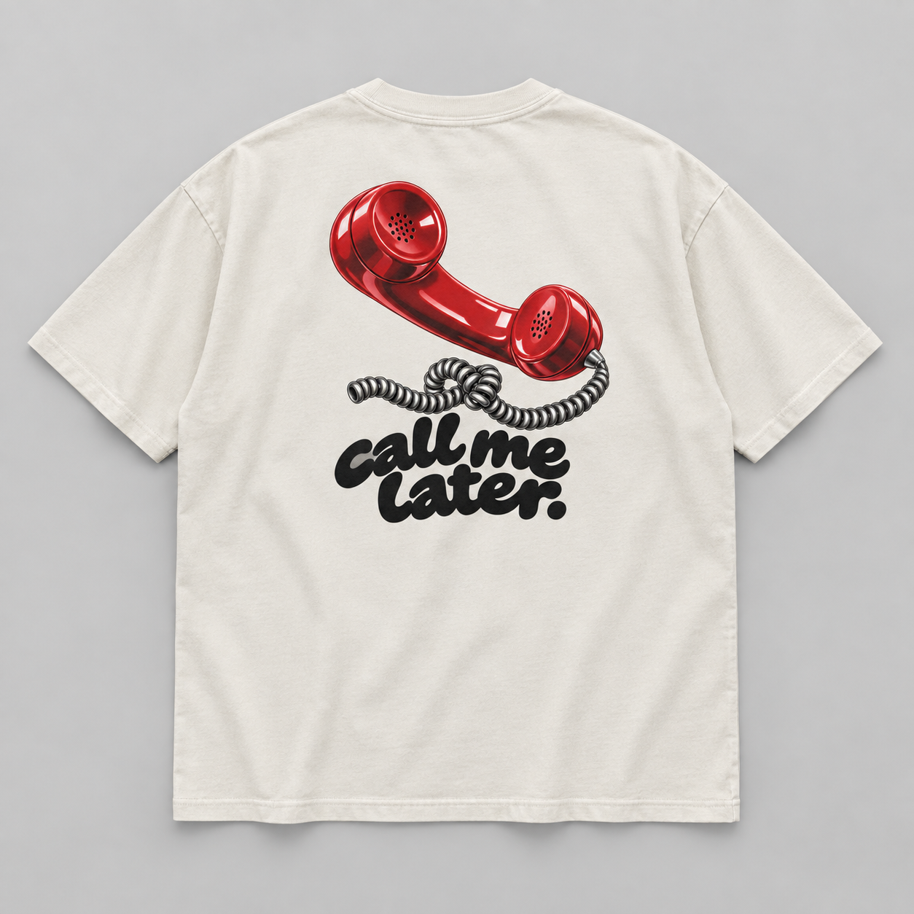

REVENIR AUX PIÈCES DE L’AUDIT
Pas juste un dessin
sur un t-shirt.
Le téléphone reprend une couleur et un effet brillant. Cela ne suffit pas à retrouver le caractère des vêtements de référence. Voici les pièces exactes, avec ce qui les distingue.
Les six repères
Choisis une photo pour la comparer ↓
01 / Nude Project
OBSERVATION VISUELLE, PAS CLASSEMENTPHOTO OFFICIELLE / RÉFÉRENCE
Photo distante indisponible. Consulte la fiche officielle ci-dessous.
NOTRE ESSAI / NON RETENU

Call me later
Mockup généré, pas un vêtement fabriqué.Quelles sont les deux pièces
que tu veux vraiment porter ?
Dis-moi leurs numéros dans la conversation. Un clic ici change seulement la comparaison : il ne m’envoie pas de message et ne valide aucun vêtement.
Il s’agit de reprendre un traitement d’image, une composition ou une allure — pas d’importer le dessin, le logo ou la photo de ces marques dans notre catalogue.
Ce que ce comparatif ne prouve pas
L’audit identifie des références visuelles de marques établies, pas un classement indépendant des meilleures ventes Shopify. Nous n’avons pas leurs conversions organiques par produit. La popularité d’une marque ne prédit pas les ventes de notre future pièce.
Les photos viennent des sites officiels, déjà répertoriées dans l’audit du 7 septembre. Elles nécessitent Internet et restent des références d’analyse, pas nos produits. Certaines finitions, coupes et constructions ne sont pas reproductibles par une simple impression sur le catalogue de notre fournisseur.